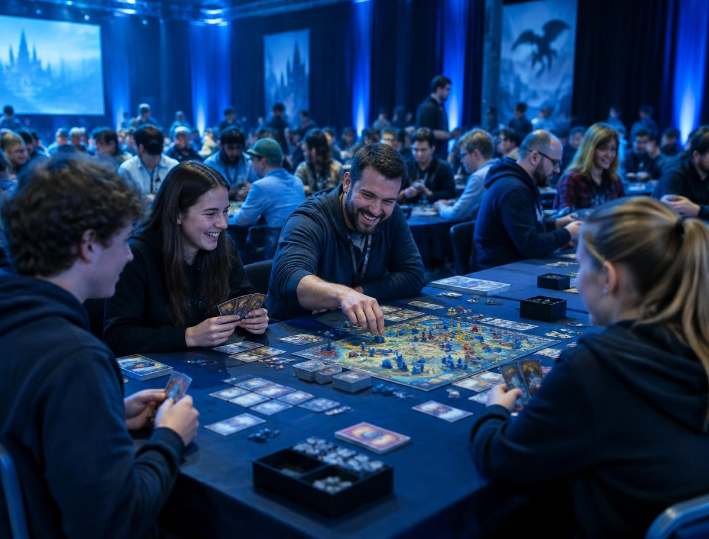
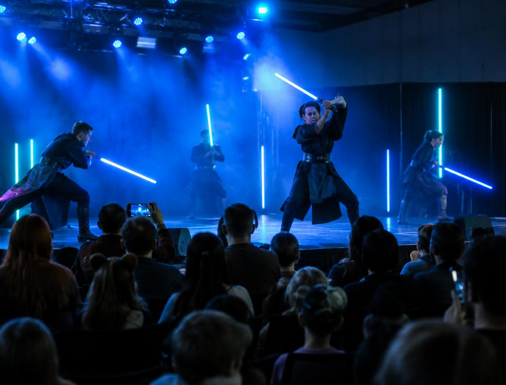
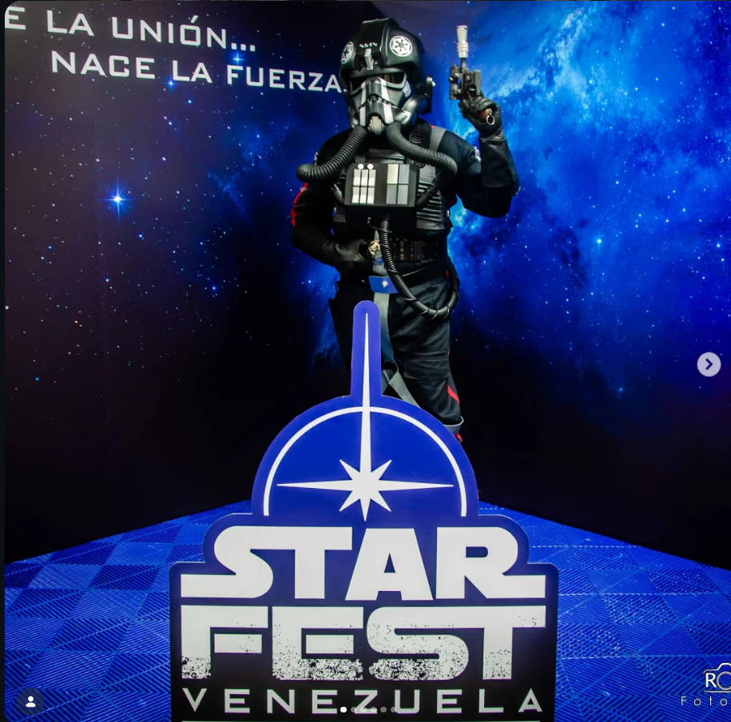
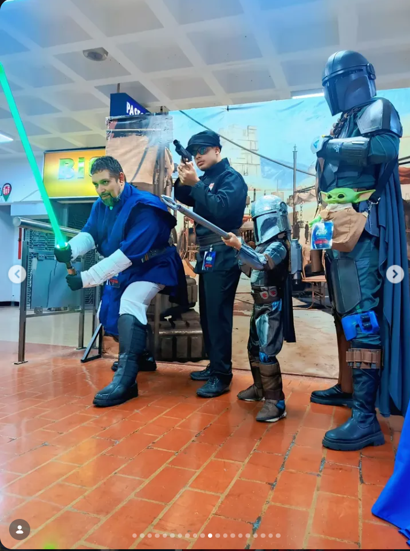

Juega
Desafíos, juegos interactivos y experiencias.

Conoce
Legiones, cosplayers, artistas, coleccionistas y comunidades.
Explora
Figuras, props, modelos, réplicas y memorabilia.
Crea
Arte, dibujo, talleres y actividades.

Aprende
Charlas, conversaciones y encuentros.

Participa
Cosplay, concursos, juegos y experiencias colectivas.
Entrada libre
Entra, explora, conversa con los coleccionistas, tómate fotos con los personajes y vive el ambiente StarFest sin pagar entrada. Dentro del evento podrás elegir, si quieres, experiencias adicionales y coleccionables.